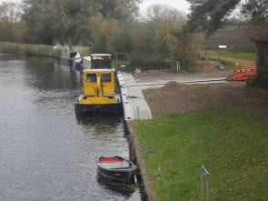
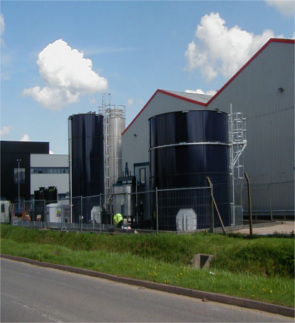
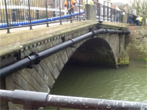
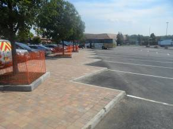
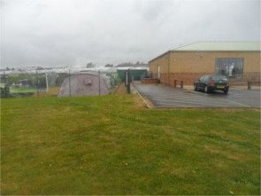
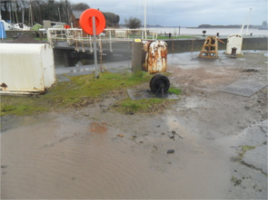
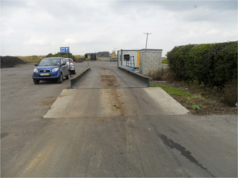
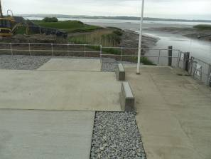

Projects
|

Design and Project Management of a project to replace sheet piled moorings and a slipway at two sites, Baits Bite Lock and Clayhithe on the River Cam. |

Project Management of the installation of a new effluent treatment plant to treat wastewater from a cake production factory. Including preparation of specifications and contract documents, and the design of all civil engineering and foundation works. |
|

Brigg Water Main Replacement. Design of a replacement 250mm diameter water main attached to a listed structure. Designed with sufficient flexibility to aid installation but maintaining restraint of the pressure pipeline. |

Design of extensions to the car parking facilities at Peterborough, Cambridge and Baldock Motorway Service Areas. The work also included drainage, utility diversions, walkway extensions, landscaped areas and reinforced concrete HGV wheel stoppers. Work needed to be planned in phases to keep the sites operational and minimise the loss of existing parking. |
|

Design and specification a 125 bay car park extension and the surface water drainage for the proposed 3750m2 shop extension for a garden centre in Lincoln. |

Design of a reinforced concrete foundation for a new rack and pinion drive for the 10m high lock gates at Lydney on the River Severn. Work undertaken with agreement of English Heritage on this Scheduled Ancient Monument. |
|

Design of a reinforced concrete hard standing area used to receive and compost green waste. The slab drained to a central sump with the waste re-used in the composting process. The slab was laid out to minimise reversing HGV vehicle movement between the weighbridge and the composting areas. |

Design and detailing of a crane platform for up to a 160 tonne mobile crane founded on soft estuary silt. The facility comprises of 20m long piles with reinforced concrete pile caps and interconnecting load bearing slab to prevent any detrimental loads on the adjacent Scheduled Ancient Monument |
To discuss how we may be able to assist you with your project contact Call George Shuttleworth Ltd. on 01522 787710 or 07940 927285 or Email: geo.shuttleworth@btconnect.com